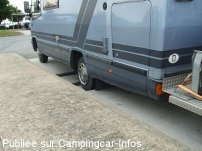
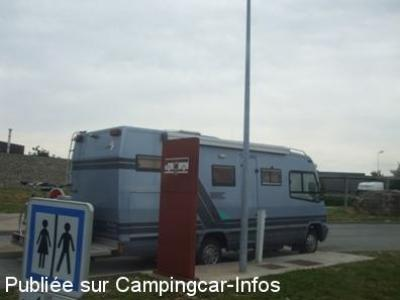

AA = Aire de services sur autoroute de :
A.75 Beziers => Clermont-Ferrand Le CAYLAR
(N° 30)
Accès/adresse :
Sens Beziers - Montpellier => Clermont-Ferrand
Sortie 49
LE CAYLAR
Sortie 49
LE CAYLAR
Latitude : (Nord) 43.8636° Décimaux ou 43° 51′ 48′′
Longitude : (Est) 3.31202° Décimaux ou 3° 18′ 43′′
Tarif : Gratuit
Type de borne : Artisanale
Services :


Carburants
Restaurant
Épicerie de dépannage
Autres informations :

Le 06/06/2012 par Louisette

Le 06/06/2012 par Louisette
de
Boris
le 23/10/2015 :
De passage en août , tout fonctionnait
Par contre grosse marche pour la vidange !! attention profond et dangereux !!
Eau vidange gratuit parking calme
De passage en août , tout fonctionnait
Par contre grosse marche pour la vidange !! attention profond et dangereux !!
Eau vidange gratuit parking calme
de
Daniel L.
le 07/04/2015 :
De passage en "montant" et en descendant, en mars 2015, seule l'aire de vidange des cars est utilisable. L'ensemble de l'aire est en travaux.
Carburant et boutiques sont ouvertes
De passage en "montant" et en descendant, en mars 2015, seule l'aire de vidange des cars est utilisable. L'ensemble de l'aire est en travaux.
Carburant et boutiques sont ouvertes
de
Louisette
le 06/06/2012 :
Passage ce jour, l'aire était fonctionnelle
Passage ce jour, l'aire était fonctionnelle
de
Philippe BOYER
le 07/03/2011 :
Agréable mais assez bruyante par le démarrage très, très matinal des poids lourds. Voir la maison de pays et le village à quelques pas.
Agréable mais assez bruyante par le démarrage très, très matinal des poids lourds. Voir la maison de pays et le village à quelques pas.
de
Christian Renard
le 05/08/2007 :
Vidange des eaux usées et remplissage possibles près de la borne de gonflage, sur la grande plate-forme réservées aux autocars.
A voir à quelques kilomètres, le cirque des Navacelles
Vidange des eaux usées et remplissage possibles près de la borne de gonflage, sur la grande plate-forme réservées aux autocars.
A voir à quelques kilomètres, le cirque des Navacelles